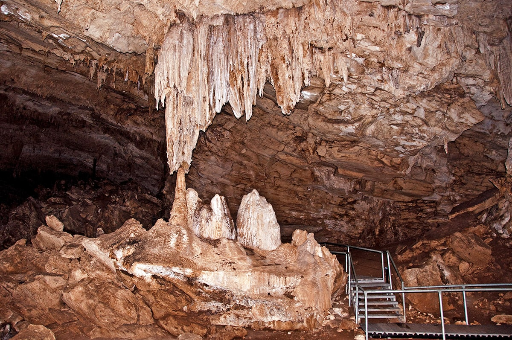

We visited Rodrigues in 2008. That was after the CPE exams of Dhaneshen. We had planned for a 4-days stay, taking the Friday and following Monday with the in-between weekend. We took the flight on Friday morning. The flight had some initial delay due to some technical problems. Finally, we had the take off at It was almost a two-hous flight and we reached Rodrigues at around 11 a.m. We were deighted by the scene. The airport seemed amazingly small and deserted, though. However, the scenery with its nice looking mountains was a very beautiful sight
We had booked our stay at the Pointe Venus hotel in Port Mathurin. The trip from the airport to the hotel was about 45 minutes and the road was full of beautiful scheries. It was a nice sunny day, which made it even more enjoyable. We reached the hotel at around 12.30. The hotel was on the pointe venus mountain and from the hotel one could admire the whole of Port Mathurin, which is the capital of Rodrigues, and a vast area beyond it. The whole of Port Mathurin is actually within walking distance. However, due to the altitude at which the hotel was located, the walk from the main road of Port Mathurin to the hotel was very tiring, specially since it was the month of November and there was a scorching sun. After going to a nearby restaurant for lunch, we spent the whole of the first day in the swimming pool.
The next day, after a heavy breakfast, it was a whole day out. We travelled by a van through several areas. After crossing Port Mathurin, we travelled through Marechal, Baies aux huitres, Baie Malgache, La Ferme, Grande Montagne, Grande LaFourche Corail, Piments, Mangues, Petit Gabriel, Lataniers and Grande Montagne. I noticed that Rodrigues was much more mountaneous than I thought. Most of the villages actually lay in the mountains. Contrary to Mauritus, where there is a rather gentle slope from the central plateau to the costal regions, in Rodrigues it was a sharp climb from the cost to the inner regions. I realised that's probably one of the source of water shortage in Rodrigues, as there was no possibility of slow-flowing rivers. Even in the event of very heavy rainfalls, the water will have drifted to the see in a very short time.
We also visited one of the great attractions in Rodrigues, which is Caverne Patate. This cavern is relatively long, more than 1km in length. The most impressive part of it is its stalagmite and stalagcite that had been formed by rain water leaking through the soil into the cave. The guide who showed us through the cave was very knowledgeable about the history of the cave and the history of Rodrigues. I came to know that Rodrigues had a unique bird called the solitaire, which was a Rodrigan version of the Mauritian Dodo and which, like the Dodo, has become extinct.
After Cavern Patate, we toured the coastal regions. Some of the beaches, such as Cotton Bay, were really nice. It's interesting to see that a very high percentage of Rodrigues population earn their living through finishing activities. Around the whole island, there is always plenty of people fishing. Also, it was impressive to note the number of women and children who participate in Fishing activities. This is reflected in the menues served in the hotel which consists of a lot of fresh seafood, including a large variety of fish, Octopus, Squid, Crab and Lobster.
We spent the Sunday morning at the market fair. This is the best time to purchase souvenirs, local artcrafts and special types of products such as lemon, pickles, salted fish and octopus, chillies, chillies mixed with Octopus (called piments zourites). It is to be noted that a lot of the products are for people who have really hot tastes. The piments zourites for example gives a highly burning sensation in the mouth.
We took the flight back to Mauritius on Monday. Again the weather was nice, though a bit hot as it was a very sunny day. On the trip back to the airport, we seized the opportunity to appreciate the scenery one last time. On boarding the plane we had the feeling that we have had a nice relaxing weekend, away from our routines and busy towns. Although, Rodrigues is not a very big place and you can visit the whole in 2 or 3 days, it is definitely a very nice place to go for a relaxing holiday